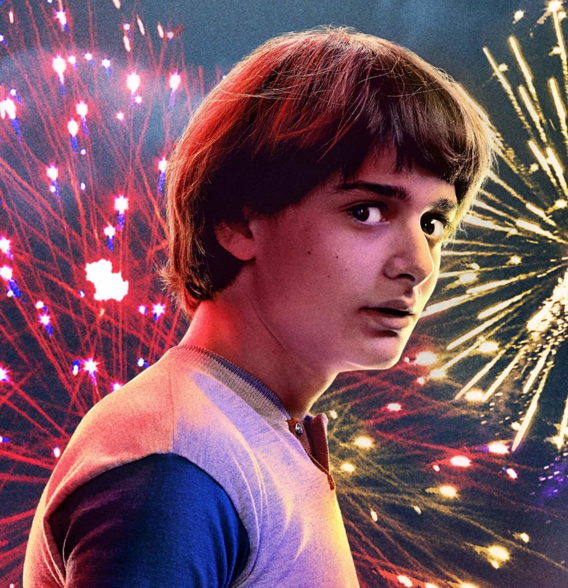
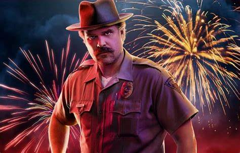

Personagens

Will Byers
Will Byers é o personagem central dá série original dá Netflix Stranger Things. Interpretado por Noah Schnapp, Will participa do grupo de amigos que envolve Mike, Dustin e Lucas. Depois que ele desapareceu sem deixar vestígios, seus amigos fizeram sua missão para resgatá-lo.
Clique Para Detalhes

Eleven
Eleven ou "Onze", interpretada por Millie Bobby Brown, é uma das personagens principais da série Stranger Things. Uma garota com poderes psicocinéticos, Eleven tem um passado misterioso e é acreditada por Mike para ser a melhor pista para encontrar Will.
Clique Para Detalhes

Mike Wheeler
Michael Wheeler, interpretado por Finn Wolfhard, é um dos principais personagens dá série original dá Netflix Stranger Things. Sendo além do protagonista masculino, o par de Eleven, a protagonista.
Clique Para Detalhes
Dustin Henderson
Dustin conheceu os outros meninos quando chegou à sua escola na 4ª série. Ele ainda tem que crescer os dentes do adulto porque ele tem Displasia cleidocraniana, uma doença genética que envolve o crescimento ósseo.
Clique Para Detalhes

Max Mayfield
Maxine Mayfield é uma protagonista apresentada na Segunda Temporada de Stranger Things. Ela é interpretada por Sadie Sink.
Clique Para Detalhes
Nancy Wheeler
Nancy Wheeler é a irmã mais velha de Mike Wheeler. Apesar de não fazer parte do mesmo núcleo do irmão, possui presença marcante na série
Clique Para Detalhes
Bill Hargrove
Billy Hargrove é o meio-irmão de Max e, ao ser apresentado durante o segundo ano da série, ele é mostrado como o típico valentão que bate nas outras crianças.
Clique Para Detalhes

Steve Harrington
Steve Harrington é um estudante na Hawkins High School e namorado de Nancy Wheeler durante a primeira e parte da segunda temporada.
Clique Para Detalhes
Robin Buckley
Robin Buckley, interpretada por Maya Hawke, é uma das personagens protagonistas, introduzida na terceira temporada de Stranger Things. Ela trabalhava no Scoops Ahoy localizado no Starcourt Mall junto de Steve Harrington.
Clique Para Detalhes

Jim Hopper
Jim Hopper é um personagem fictício da série de drama de terror de ficção científica da Netflix Stranger Things. Ele é o chefe de polícia de Hawkins, Indiana, que, ao longo das três primeiras temporadas, investiga as estranhas ocorrências na cidade.
Clique Para Detalhes